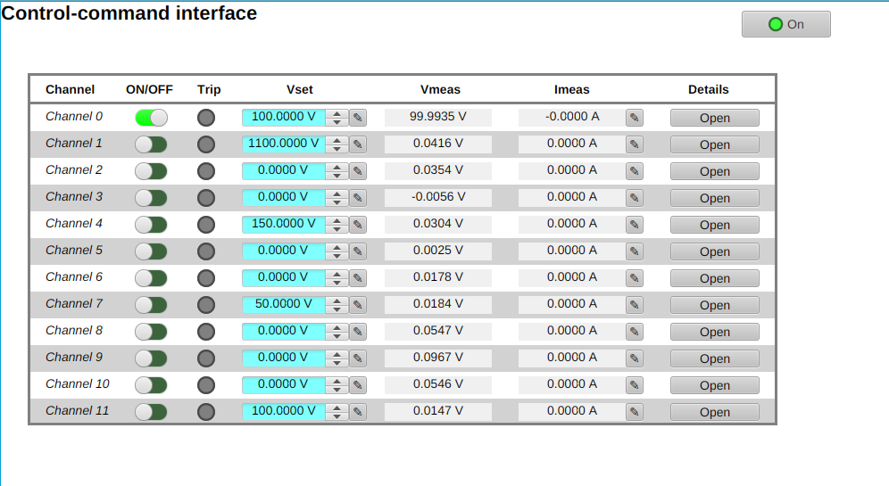
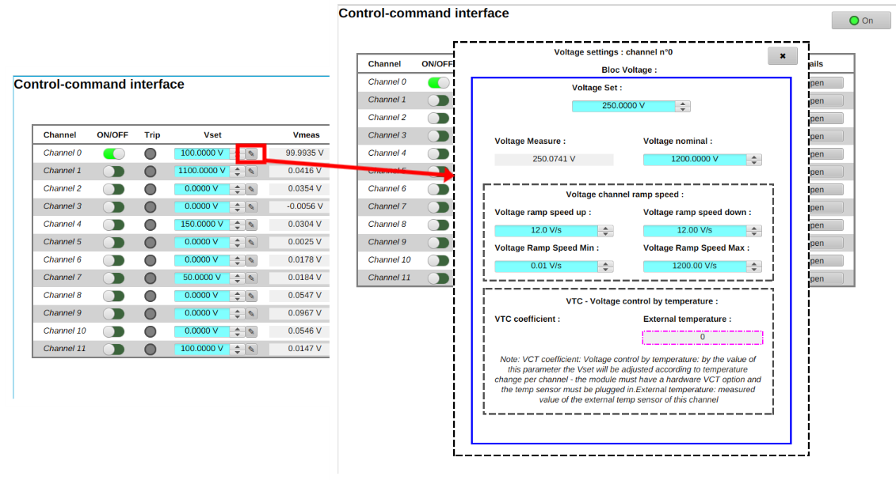
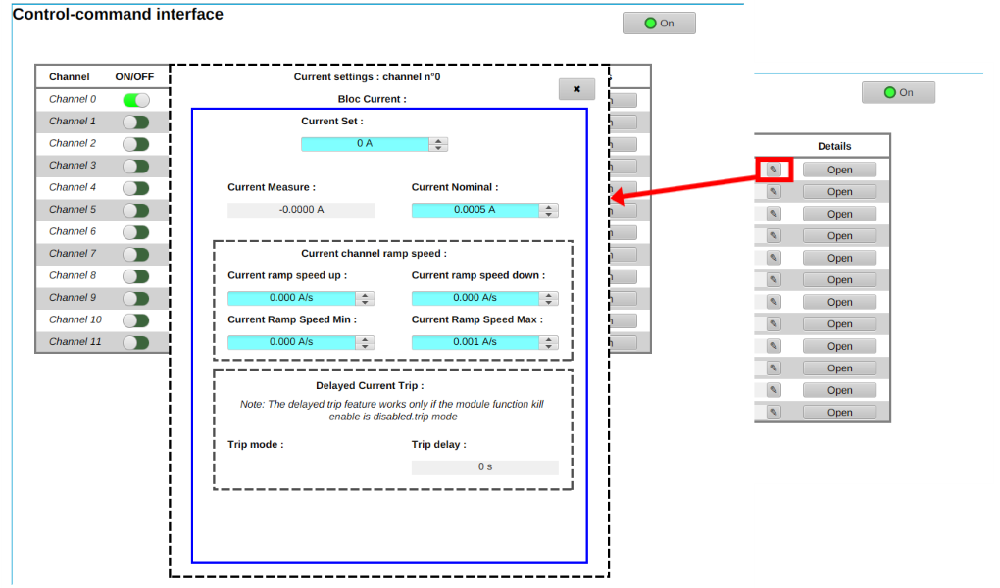
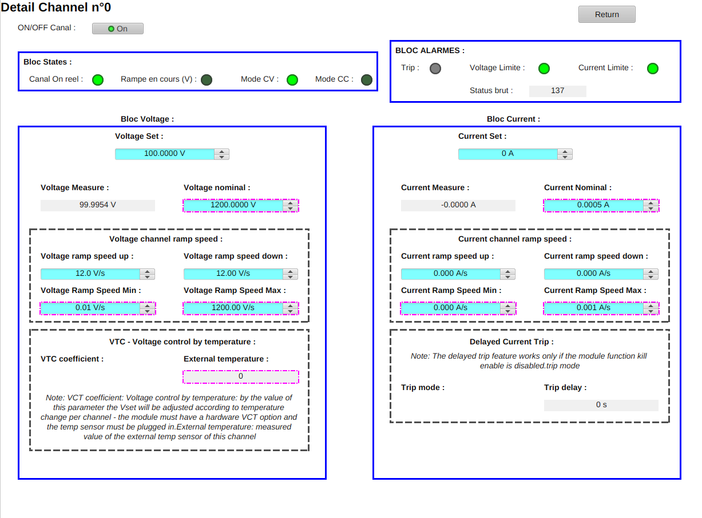

Version 1.0
Manuel d'utilisation
Interface de contrôle-commande pour HINA
Alimentation Haute Tension ISEG

Navigation
Sommaire
Utilisez ce sommaire pour accéder directement aux chapitres de prise en main, de réglage, de diagnostic et de dépannage de l'interface de supervision ISEG.
Le projet HINA est l'installation expérimentale globale. L'interface décrite dans ce manuel n'est qu'une brique de son futur système de contrôle-commande : elle supervise uniquement l'alimentation haute tension ISEG utilisée pour les quadrupôles électrostatiques.
Elle a été développée sous Phoebus pour rendre exploitables les données publiées par l'IOC EPICS intégré à l'alimentation. Son objectif est de donner aux utilisateurs une vue claire des 12 canaux : état ON/OFF, Trip, tensions, courants, consignes, mesures et accès aux réglages détaillés.
On peut voir le contrôle-commande global de HINA comme un orchestre : cette interface correspond à un instrument, par exemple un violoncelle. Seule, elle ne pilote qu'une partie précise de l'installation ; avec les autres interfaces à venir, elle contribuera à former l'ensemble cohérent du système de contrôle-commande HINA.
- Ouvrir l'écran principal
main.bobdans Phoebus. - Vérifier que les 12 lignes de canaux sont visibles et que les valeurs EPICS sont connectées.
- Contrôler l'état global de l'alimentation avec le voyant supérieur ON/OFF.
- Utiliser Open pour consulter la vue détaillée d'un canal, puis les fenêtres de réglage si nécessaire.
Avant d'utiliser l'interface, le poste de contrôle doit pouvoir communiquer avec l'alimentation ISEG via le réseau local du laboratoire et le protocole EPICS Channel Access.
Dans le cadre du développement, l'alimentation a été raccordée au réseau par un switch Ethernet et configurée avec une adresse IP fixe 192.168.2.2. L'interface Phoebus s'appuie ensuite sur les PV publiées par l'IOC embarqué de l'alimentation, sans serveur EPICS externe supplémentaire.
- Démarrer Phoebus avec le support Display Builder.
- Vérifier que le poste de contrôle atteint l'alimentation ISEG sur le réseau local.
- Contrôler que l'IOC embarqué publie les PV via Channel Access.
- Vérifier l'accès aux fichiers
main.bob,detail_channel.bob,voltage_settings.bobetcurrent_settings.bob.
Le lancement démarre par l'ouverture de main.bob, l'écran principal qui donne accès aux 12 canaux de l'alimentation.
Les fenêtres spécialisées sont réutilisées pour tous les canaux grâce aux macros Phoebus. La macro $(CH) est remplacée par le numéro du canal sélectionné afin de construire dynamiquement les noms de PV, par exemple ISEG:5230874:0:0:$(CH):VoltageSet.
- Démarrer Phoebus.
- Ouvrir le fichier
main.bob. - Attendre l'initialisation des widgets et la connexion des PV.
- Cliquer sur Open sur un canal pour ouvrir
detail_channel.bob.
L'écran principal main.bob fournit une vision globale des 12 canaux de l'alimentation ISEG.
Chaque ligne correspond à un canal. L'utilisateur peut visualiser l'état ON/OFF, l'état Trip, la tension de consigne Vset, la tension mesurée Vmeas, le courant mesuré Imeas et ouvrir la page détaillée avec le bouton Open.
Les champs bleu clair correspondent aux valeurs que l'utilisateur peut modifier lorsque l'écriture est autorisée.
Les champs blancs ou gris affichent des valeurs mesurées ou des états renvoyés par l'IOC embarqué.
Le bouton ON/OFF agit sur le canal ; le bouton Open ouvre la vue détaillée du canal sélectionné.
- Repérer la ligne du canal concerné, de Channel 0 à Channel 11.
- Vérifier le voyant ON/OFF et le voyant Trip.
- Comparer Vset avec Vmeas, puis contrôler Imeas.
- Cliquer sur Open pour consulter les détails, alarmes et réglages complets.
Un canal est une sortie indépendante de l'alimentation. Dans ce projet, les 12 canaux doivent pouvoir être surveillés séparément.
La gestion d'un canal consiste à vérifier son état réel, ses consignes, ses mesures, sa rampe éventuelle et les alarmes associées. Les fenêtres détaillées reprennent les blocs Voltage, Current, States et Alarmes pour le canal sélectionné.
- Identifier le canal dans l'écran principal.
- Contrôler Trip et les mesures affichées.
- Ouvrir la vue détaillée du canal avec Open.
- Vérifier Canal On réel, Rampe en cours, Mode CV et Mode CC.
La fenêtre voltage_settings.bob permet de consulter et régler les paramètres de tension du canal sélectionné.
Elle reprend les valeurs utiles retenues pendant le développement : tension de consigne, tension mesurée, tension nominale, vitesses de rampe et paramètres VTC. Cette fenêtre est réutilisée pour les 12 canaux grâce à la macro Phoebus $(CH).
| Paramètre | Rôle |
|---|---|
| Voltage Set | Tension de consigne demandée par l'utilisateur pour le canal. Dans l'interface, ce champ apparaît en bleu clair lorsqu'il est modifiable. |
| Voltage Measure | Tension réellement mesurée par l'alimentation ISEG. Elle permet de vérifier si la tension appliquée suit bien la consigne. |
| Voltage Nominal | Tension nominale maximale du canal. Elle sert de référence de sécurité pour éviter une consigne incompatible avec le matériel. |
| Voltage Ramp Speed Up | Vitesse de montée de la tension lorsque la consigne augmente. |
| Voltage Ramp Speed Down | Vitesse de descente de la tension lorsque la consigne diminue. |
| Voltage Ramp Speed Min | Valeur minimale autorisée pour la vitesse de rampe. |
| Voltage Ramp Speed Max | Valeur maximale autorisée pour la vitesse de rampe. |
| VTC Coefficient | Coefficient de compensation thermique. Lorsque le module dispose de l'option VTC et d'un capteur connecté, la tension peut être ajustée selon la température du canal. |
| External Temperature | Température externe mesurée par le capteur associé au canal, utilisée pour le suivi ou la compensation VTC. |
- Depuis la vue du canal, ouvrir la fenêtre de réglage tension.
- Lire Voltage Measure pour connaître la tension réelle.
- Comparer Voltage Set avec Voltage Nominal avant toute modification.
- Contrôler les vitesses de rampe puis suivre la stabilisation dans la vue détaillée.

La fenêtre current_settings.bob reprend la même logique que la fenêtre tension, mais pour les paramètres courant du canal.
Elle permet de consulter le courant mesuré, de régler la limite de courant, de configurer les rampes et de vérifier les paramètres de déclenchement différé Delayed Current Trip.
| Paramètre | Rôle |
|---|---|
| Current Set | Consigne ou limite de courant appliquée au canal. Elle définit le seuil de fonctionnement attendu. |
| Current Measure | Courant réellement mesuré par l'alimentation. Cette valeur permet de détecter une consommation anormale. |
| Current Nominal | Courant nominal maximal de référence pour le canal. |
| Current Ramp Speed Up | Vitesse de montée de la consigne ou limite courant. |
| Current Ramp Speed Down | Vitesse de descente de la consigne ou limite courant. |
| Current Ramp Speed Min | Valeur minimale autorisée pour la rampe courant. |
| Current Ramp Speed Max | Valeur maximale autorisée pour la rampe courant. |
| Trip Delay | Délai avant déclenchement du Trip après dépassement ou condition de protection liée au courant. |
| Trip Mode | Mode de déclenchement associé au courant. Il définit le comportement de protection appliqué par l'alimentation. |
- Ouvrir la fenêtre courant depuis le canal concerné.
- Comparer Current Measure, Current Set et Current Nominal.
- Vérifier les rampes de courant.
- Lire Trip Mode et Trip Delay avant de modifier une limite.

La vue detail_channel.bob regroupe les informations complètes du canal sélectionné.
Elle reprend les blocs Voltage et Current, ajoute un bloc d'états et un bloc d'alarmes. C'est la fenêtre à consulter lorsqu'un canal ne réagit pas comme prévu, lorsqu'un Trip apparaît ou lorsque l'on veut confirmer le mode de régulation réel.
| Indicateur | Description |
|---|---|
| État du canal | Vue synthétique de l'état du canal dans le bloc States. |
| ON réel | Retour matériel indiquant si le canal est réellement activé, indépendamment de la commande demandée. |
| Trip | Voyant du bloc Alarmes signalant un déclenchement de sécurité. |
| Current Limit | Voyant indiquant que la limite de courant est atteinte. |
| Voltage Limit | Voyant indiquant que la limite de tension est atteinte. |
| Status | État interprété par l'interface à partir des PV du canal. |
| Status brut | Code d'état brut renvoyé par l'alimentation, utile lors d'un diagnostic avancé. |
| CV | Constant Voltage : le canal fonctionne en régulation de tension. |
| CC | Constant Current : le canal fonctionne en régulation ou limitation de courant. |
| Ramping | Indique qu'une rampe de tension est en cours. |
| Alarmes | Bloc regroupant Trip, Voltage Limite, Current Limite et Status brut. |
| Diagnostic | Lecture croisée des états, mesures, limites et alarmes du canal. |
- Cliquer sur Open dans la ligne du canal.
- Lire le bloc States : ON réel, rampe en cours, mode CV et mode CC.
- Lire le bloc Alarmes : Trip, Voltage Limite, Current Limite et Status brut.
- Comparer les blocs Voltage et Current avec les valeurs visibles sur l'écran principal.

Le bloc Alarmes de la vue détaillée signale les conditions de protection ou d'anomalie du canal.
Dans cette interface, les informations d'alarme sont issues des PV de l'alimentation ISEG. Elles permettent de repérer un Trip, une limite de tension, une limite de courant ou un état brut renvoyé par le matériel.
- Identifier le canal concerné depuis l'écran principal.
- Ouvrir sa vue détaillée.
- Lire les voyants Trip, Voltage Limite et Current Limite.
- Noter le Status brut si une analyse plus poussée est nécessaire.
Le dépannage doit partir des symptômes visibles dans Phoebus, puis vérifier la communication EPICS et enfin l'état matériel de l'alimentation.
Le cas le plus important rencontré pendant le développement concernait des mesures bloquées à zéro avec l'état UDF INVALID. La cause identifiée était l'absence du champ SCAN dans les records de mesure, corrigée par field(SCAN, "1 second"), puis redéploiement et redémarrage de l'IOC.
| Symptôme | Cause probable | Solution |
|---|---|---|
| Tous les PV sont gris. | Alimentation non joignable, IOC embarqué indisponible ou problème Channel Access. | Tester le réseau, puis lire une PV avec caget. |
| Impossible de modifier une valeur. | Champ en lecture seule, PV non modifiable ou canal dans un état bloquant. | Vérifier que le champ est bleu clair, puis contrôler l'état du canal. |
| Canal bloqué en Trip. | Déclenchement de protection lié au courant, à la tension ou à l'état matériel. | Ouvrir la vue détaillée, lire Trip, limites et Status brut avant remise en service. |
| Connexion EPICS perdue. | Problème réseau, switch, adresse IP, IOC ou Channel Access. | Tester ping, caget et l'accès à iCS2. |
| IOC arrêté. | IOC embarqué non actif ou redémarrage nécessaire après configuration. | Redémarrer l'IOC selon la procédure ISEG/iCS2. |
| Perte du réseau Ethernet. | Switch déconnecté, câble défaillant ou adresse IP inaccessible. | Vérifier la liaison réseau locale avec l'alimentation. |
| Impossible d'ouvrir une fenêtre. | Fichier .bob absent, chemin incorrect ou macro $(CH) non transmise. | Vérifier detail_channel.bob, voltage_settings.bob et current_settings.bob. |
VoltageMeasure ou CurrentMeasure reste à zéro. | Record EPICS en mode Passive, absence de champ SCAN, état UDF INVALID. | Ajouter field(SCAN, "1 second") aux records concernés, redéployer puis redémarrer l'IOC. |
- Identifier si le problème touche un canal ou l'ensemble de l'alimentation.
- Tester la communication réseau avec l'alimentation.
- Lire une PV avec
cagetet suivre son évolution aveccamonitor. - Comparer Phoebus avec iCS2 lorsque c'est possible.
Ce glossaire reprend les termes utilisés dans l'interface de supervision ISEG, dans EPICS et dans le contexte du projet HINA.
EPICS : Experimental Physics and Industrial Control System, ensemble d'outils utilisés pour construire des systèmes de contrôle-commande distribués.
IOC : Input Output Controller, serveur EPICS connecté au matériel. Dans ce projet, l'IOC est embarqué dans l'alimentation ISEG.
Process Variable : variable EPICS représentant une mesure, une consigne, un état ou une alarme.
PV : abréviation de Process Variable.
ISEG : constructeur d'alimentations haute tension utilisées dans des installations scientifiques.
High Voltage : haute tension fournie aux équipements expérimentaux, notamment aux quadrupôles électrostatiques.
Canal : sortie indépendante de l'alimentation permettant de piloter un équipement ou une voie spécifique.
Trip : déclenchement de protection à la suite d'une condition anormale.
Current Limit : limite courant atteinte ou active.
Voltage Limit : limite tension atteinte ou active.
Ramp : progression contrôlée d'une valeur vers une consigne.
CV : Constant Voltage, régulation en tension.
CC : Constant Current, régulation ou limitation en courant.
Phoebus : logiciel de supervision permettant de créer des interfaces graphiques pour les systèmes EPICS.
Display Builder : outil Phoebus utilisé pour construire les fichiers d'interface .bob.
Macro : paramètre de substitution permettant de réutiliser une même fenêtre pour plusieurs canaux, par exemple $(CH).
Embedded Display : affichage Phoebus intégré dans un autre affichage.
Channel Access : protocole EPICS client/serveur utilisé pour lire, écrire et surveiller les PV.
iCS2 : interface web fournie par ISEG pour configurer et administrer l'alimentation.
SCAN : champ EPICS définissant la fréquence de mise à jour automatique d'une PV.
UDF INVALID : état EPICS indiquant qu'une PV ne possède pas de valeur valide.
Fichier .db : fichier modèle contenant les définitions des records EPICS.
Fichier .sub : fichier de substitution injectant les paramètres réels du matériel dans les modèles.
Fichier .pv : fichier listant les Process Variables générées et accessibles.
Quadrupôle électrostatique : élément d'optique ionique utilisé pour guider ou focaliser les ions.
- Identifier le terme dans l'écran Phoebus ou dans le message EPICS.
- Consulter la définition correspondante.
- Revenir à la section du manuel associée au champ ou à l'état concerné.
Cette FAQ répond aux situations les plus probables lors de l'utilisation de l'interface de supervision ISEG et de ses fenêtres Phoebus.
Pourquoi certaines valeurs sont-elles grisées ?
Les valeurs grisées correspondent généralement à des mesures ou états en lecture seule, comme Vmeas, Imeas ou Status brut. Si un champ normalement actif devient gris, vérifiez la connexion de la PV.
Pourquoi les mesures restent-elles à zéro ?
Si VoltageMeasure ou CurrentMeasure reste à zéro avec l'état UDF INVALID, le record EPICS peut ne pas être scanné automatiquement. Le correctif utilisé pendant le stage a été d'ajouter field(SCAN, "1 second") puis de redéployer et redémarrer l'IOC.
Comment vérifier une PV sans Phoebus ?
Utilisez caget pour lire une PV, caput pour modifier une consigne autorisée et camonitor pour suivre une mesure en temps réel.
Pourquoi une valeur est-elle inaccessible ?
Le champ peut être en lecture seule, associé à une PV non connectée, verrouillé par l'état du canal ou non prévu comme réglage utilisateur.
Pourquoi le canal reste OFF ?
La commande peut être bloquée par un Trip, une limite atteinte, un état matériel non valide ou une perte de communication EPICS.
Comment savoir si une rampe est en cours ?
Ouvrez la vue détaillée et contrôlez le voyant Rampe en cours (V). Pendant la rampe, Voltage Measure évolue progressivement vers Voltage Set.
À quoi servent les macros Phoebus ?
Elles évitent de créer une fenêtre différente pour chaque canal. La macro $(CH) remplace dynamiquement le numéro de canal dans les noms de PV.
Pourquoi comparer Phoebus avec iCS2 ?
iCS2 est l'interface web constructeur. Elle peut aider à confirmer si une valeur incohérente vient de Phoebus, d'EPICS ou de l'alimentation elle-même.
- Identifier le symptôme observé dans Phoebus.
- Lire la réponse associée.
- Si nécessaire, appliquer la procédure de dépannage avec les outils EPICS.
Ce manuel accompagne l'interface de supervision de l'alimentation ISEG développée pendant le stage de Mohammed Chibani Bahi à l'IJCLab, au sein de l'équipe FIIRST, pour le projet HINA.
Le travail porte sur une interface de contrôle-commande Phoebus destinée à superviser une alimentation haute tension ISEG. Cette alimentation alimente des quadrupôles électrostatiques et publie ses données dans EPICS grâce à son IOC intégré.
- Conserver ce manuel avec les fichiers Phoebus associés :
main.bob,detail_channel.bob,voltage_settings.bobetcurrent_settings.bob. - Mettre à jour les captures si l'interface évolue.
- Documenter toute modification de PV, de macro ou de fichier EPICS.
- Compléter la section dépannage avec les incidents rencontrés pendant les tests.